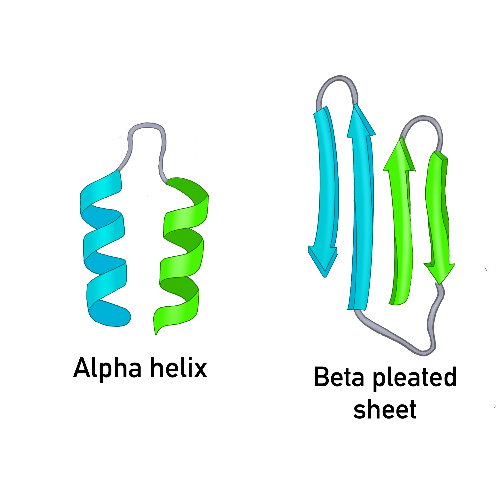
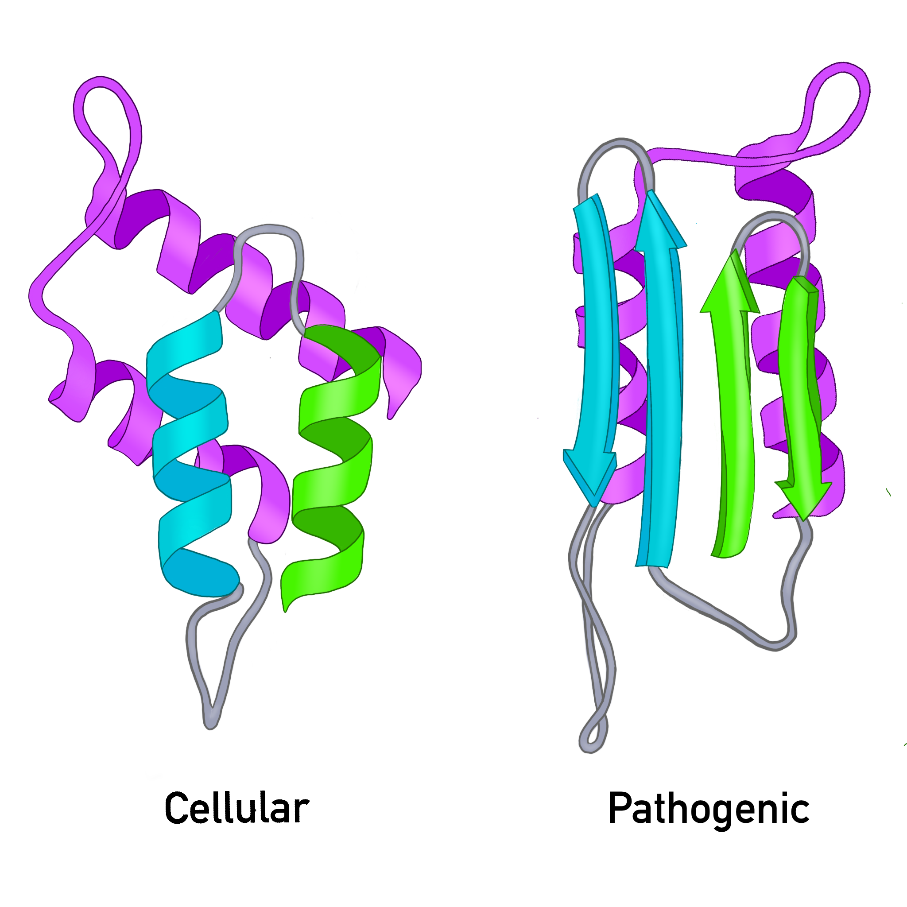

Prions
Note: This page is a rough draft, still a work in progress
What you should understand
By the end of this section, you should be able to:
- Explain why prions are unusual infectious agents
- Distinguish between the normal and pathogenic forms of prion protein
- Describe how prions spread within the body
- Identify major human and animal prion diseases
- Explain why prion diseases are so damaging to the brain
What is a prion?
A prion is an infectious misfolded protein.
Prions are unusual because they can spread disease without using DNA or RNA.
Most infectious agents, such as bacteria and viruses, rely on nucleic acids (DNA or RNA). Prions do not. Instead, they spread by causing a normal protein to change shape into a harmful (pathogenic) form.
The cellular and pathogenic forms
The protein involved is called a Prion protein, shorthand: PrP The prion protein that carries out normal cellular funciton is called the cellular form, shorthand: PrPC.
The disease-causing form is called the pathogenic form, shorthand: PrPSc.
PrPC (cellular form)
- cellular protein found normally in the body
- soluble
- sensitive to proteases (easy to degrade when needed)
- rich in alpha helices (see Figure 1.)
PrPSc (pathogenic form)
- misfolded form
- tends to aggregate (clump)
- more resistant to proteases (difficult to degrade)
- enriched in beta sheets (See Figure 1.)

Figure 1. The cellular prion protein is dominated by the alpha helix secondary protein shape. The pathogenic prion protein is dominated by the beta pleated sheet secondary protein shape.
Figure 2. The cellular prion protein and the pathogenic prion protein differ in shape which leads to different behavior.Pathogenic prion proteins are not foreign invaders, as with bacteria and viruses. They are typically normal cellular protein folded into the wrong shape. This misfolding can spread to other cellular prion proteins converting them to the pathogenic form.
How do prions spread?
Prions spread by template-directed misfolding.
A misfolded pathogenic prion protein (PrPSc) acts as a template. It interacts with a cellular prion protein (PrPC) and causes it to misfold, turning the cellular prion protein (PrPC)into a pathogenic prion protein (PrPSc). This creates a chain reaction. Each newly converted protein converts other proteins.
Figure 3. A pathogenic prion protein can induce cellular prion proteins to adopt the same harmful shape.
As misfolded proteins accumulate, they form clumps called aggregates that damage nervous tissue.
Figure 4. Misfolded prion proteins accumulate into aggregates that damage cells.
How does prion disease arise?
Prion diseases can arise in three main ways.
1. Sporadic
The disease appears without a clear external cause.
Example: - sporadic Creutzfeldt-Jakob disease (sCJD)
2. Genetic
Mutations in the PRNP gene increase the likelihood of prion misfolding.
Example: - fatal familial insomnia (FFI)
3. Acquired
Exposure to infectious prion material causes disease.
Examples: - contaminated surgical instruments - contaminated food - infected tissue exposure
Human and animal prion diseases
Human prion diseases
- Creutzfeldt-Jakob disease (CJD)
- variant CJD (vCJD)
- fatal familial insomnia (FFI)
- Gerstmann-Sträussler-Scheinker syndrome (GSS)
- kuru
Animal prion diseases
- bovine spongiform encephalopathy (BSE; “mad cow disease”)
- scrapie (this is where the ‘Sc’ in PrPSc comes from)
- chronic wasting disease (CWD)
Why do prions damage the brain?
Prion diseases are neurodegenerative diseases. As misfolded prion proteins accumulate, they disrupt normal brain function.
Major effects include:
synaptic dysfunction
communication between neurons breaks downneuroinflammation
immune activity in the brain contributes to damagecell death
neurons are lost over time
Figure 7. Prion accumulation leads to brain dysfunction and degeneration.
Prion diseases are progressive, fatal brain diseases caused by a misfolded protein that spreads its shape to other proteins.
Why are prions scientifically important?
Prions changed how we understand infection.
Before prions were discovered, infectious disease was thought to require a pathogen (like a bacteria or virus) carrying nucleic acid (DNA or RNA). Prions showed that protein shape alone can carry biological information and spread disease.
This makes prions important not only for medicine, but also for our understanding of: - protein folding - neurodegeneration - inheritance and mutation - the relationship between structure and function
Diagnosis and treatment
Prion diseases are difficult to diagnose early because they: - often have long incubation periods - share symptoms with other neurodegenerative diseases - progress rapidly once symptoms appear
Common approaches include: - MRI - RT-QuIC - post-mortem tissue analysis
There are currently no effective cures, but researchers are exploring: - drugs that reduce aggregation - methods to reduce normal prion protein production - immunological approaches
Summary
- A prion is an infectious misfolded protein
- Prions do not use DNA or RNA to spread
- The pathogenic form causes the normal form to misfold
- Prion diseases can be sporadic, genetic, or acquired
- Prions damage the nervous system and cause fatal neurodegeneration
Check your understanding
- Why are prions considered unusual infectious agents?
- What is the difference between PrPC and PrPSc?
- Why does a change in protein shape matter so much in general and specifically in prion disease?